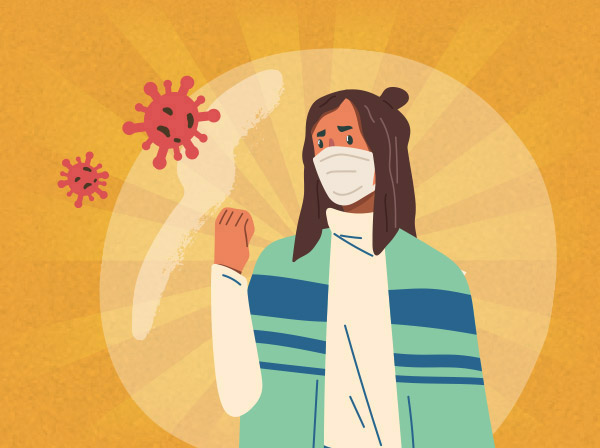

秋冬防流感 ! 流感疫苗知多少？


隨著天氣轉涼，又來到了流感病毒又開始蠢蠢欲動的季節。每年秋冬，我們都會看到流感疫情相關的新聞，但是對於流感你足夠瞭解嗎？讓我們一起來測測看！
Q{{question_index + 1}}. {{now_question.title}}


什麼是流感？
流感是流行性感冒的簡稱，是由流感病毒引起的急性呼吸道傳染病。
每年從11月下旬至隔年3月是台灣流感疫情的好發季節。
流感的傳染途徑以「飛沫傳染」為主，由於病毒可以在寒冷低溼度的環境中存活數小時，也有可能經由「間接接觸傳染」，尤其是在空氣不流通的密閉空間中，最容易感染流感！

流感和感冒、新冠肺炎有什麼差異？
流感和感冒、新冠肺炎症狀類似，但是流感來勢兇猛，典型症狀是突然連續高燒2-3日、頭痛、全身痠痛，只能臥床休息。流感和新冠肺炎都具備高傳染性，出現相關症狀，請戴上口罩儘速就醫！
| 比較 | 新冠肺炎 | 流感 | 感冒 |
|---|---|---|---|
| 比較 | 感染源 | ||
| 新冠肺炎 | 冠狀病毒 | ||
| 流感 | 流感病毒 | ||
| 感冒 | 其他許多病毒(鼻病毒、呼吸 道融合病毒、腺病毒等) | ||
| 比較 | 潛伏期 | ||
| 新冠肺炎 | 1-14天最長 | ||
| 流感 | 1-4天 | ||
| 感冒 | 1-3天 | ||
| 比較 | 流行期間 | ||
| 新冠肺炎 | 全年 | ||
| 流感 | 秋季&冬季 | ||
| 感冒 | 全年 | ||
| 比較 | 病程 | ||
| 新冠肺炎 | 發病初期身體僅輕微不適，部分患者在發病一週後惡化，也有部分無症狀感染者 | ||
| 流感 | 症狀惡化速度非常快，發病到痊癒約需1～3週 | ||
| 感冒 | 一般可以在一週內痊癒 | ||
| 比較 | 發燒 | ||
| 新冠肺炎 | 常見 | ||
| 流感 | 常見 | ||
| 感冒 |  較少 較少 | ||
| 比較 | 咳嗽/喉嚨痛 | ||
| 新冠肺炎 | 常見 | ||
| 流感 | 常見 | ||
| 感冒 | 常見 | ||
| 比較 | 鼻塞/流鼻涕 | ||
| 新冠肺炎 | 較少 | ||
| 流感 | 常見 | ||
| 感冒 | 常見 | ||
| 比較 | 頭痛 | ||
| 新冠肺炎 | 常見 | ||
| 流感 | 常見 | ||
| 感冒 | 較少 | ||
| 比較 | 呼吸困難 | ||
| 新冠肺炎 |  重症時出現，發生率較高 重症時出現，發生率較高 | ||
| 流感 |  重症時出現 重症時出現 | ||
| 感冒 |  沒有 沒有 | ||
| 比較 | 腹瀉 | ||
| 新冠肺炎 | 較多 | ||
| 流感 | 較少 | ||
| 感冒 | 較少 | ||
| 比較 | 肌肉痠痛 | ||
| 新冠肺炎 | 常見 | ||
| 流感 | 常見 | ||
| 感冒 |  沒有 沒有 | ||
| 比較 | 全身無力 | ||
| 新冠肺炎 | 常見 | ||
| 流感 | 常見 | ||
| 感冒 | 少見 | ||
| 比較 | 嗅/味覺喪失 | ||
| 新冠肺炎 | 常見 | ||
| 流感 | 沒有 | ||
| 感冒 | 沒有 |
該如何預防流感病毒？
每到流感季節，就會收到各種預防流感的小偏方，例如：吃維他命、室內擺洋蔥等等，但這些缺乏科學證實的網路謠言是無法有效預防流感的，正確預防流感四步驟：


- 施打流感疫苗是有效預流感的方式！
- 接種疫苗有助於減輕感染症狀、降低嚴重併發症與死亡風險，高風險族群務必每年都要接種疫苗

- 勤洗手
- 雙手避免觸碰眼口鼻，減少接觸感染的機率


- 戴口罩
- 減少出入人多的場所或密閉空間，並戴好口罩避免飛沫感染

- 增強免疫力
- 保持良好作息、多運動、均衡飲食，增加自身防護力
哪些人是流感的高風險族群？
即便是健康的成人，也有感染流感的風險，流感除了一般感冒的症狀外，部分病患還會出現肺炎、腦炎、心肌炎等嚴重併發症，甚至死亡。免疫力較差的族群，是最容易出現併發症的高風險族群。

- 150歲以上成人

- 2孕婦

- 3未滿五歲嬰幼兒
-
4肥胖者
（BMI>=30）

-
5慢性病或罕見疾病患者
(如：氣喘、糖尿病、心血管疾病、肝硬化、腎臟病等)

- 6免疫功能不全者
依據疾管署統計資料，歷年流感重症及死亡個案，約有7至9成具慢性病史，且感染流感後，容易加重慢性病症狀，增加嚴重併發症發生機率與死亡風險。高風險族群建議於流感季節來臨前完成疫苗接種，對疫苗接種有任何疑慮，都可以跟醫師作諮詢。
不要輕易聽信網路傳言而拒絕施打疫苗，保護自己也保護家人！

2021年度公費流感疫苗即將開打，符合公費接種的對象，可至全國各鄉鎮市區衛生所、合約院所進行疫苗接種，接種地點不受戶籍地限制，前往接種疫苗時，也別忘了攜帶健保卡及身分證件。
合約院所名單，可以上流感防治一網通查詢或詢問縣市衛生局、疾管署1922疫情通報及諮詢專線。對於流感疫苗，是否還有很多疑惑呢？讓我們來為您解答！

流感疫苗多久要打幾次？多久會產生保護力？
建議每年都要接種1次流感疫苗！
完成流感疫苗接種約2週後疫苗會產生保護力。
流感疫苗的保護效力有時限，而且流感疫苗容易變異，每年流行的病毒株不同，因此每年都要定期施打流感疫苗。
完成流感疫苗接種約2週後疫苗會產生保護力。
流感疫苗的保護效力有時限，而且流感疫苗容易變異，每年流行的病毒株不同，因此每年都要定期施打流感疫苗。
打流感疫苗可以預防新冠肺炎嗎？
流感疫苗不能直接預防新冠肺炎，但是施打流感疫苗可以增加保護力，降低嚴重併發症的風險，對於對抗新冠肺炎來說是有正向效果的。
流感疫苗是非活性疫苗，接種流感疫苗建議要與接種新冠肺炎疫苗間隔7天以上！
流感疫苗是非活性疫苗，接種流感疫苗建議要與接種新冠肺炎疫苗間隔7天以上！

誰不適合施打流感疫苗？
1.未滿6個月嬰兒。
2.對疫苗成份過敏或曾發生嚴重不良反應者。
3.有過敏體質者，接種前可先經由醫師評估。
4.發燒中或患有急性中重疾病者，建議等病情穩定後再接種。
2.對疫苗成份過敏或曾發生嚴重不良反應者。
3.有過敏體質者，接種前可先經由醫師評估。
4.發燒中或患有急性中重疾病者，建議等病情穩定後再接種。
應該如何保護新生兒避免感染流感？
由於出生未滿6個月的新生兒還不適合接種流感疫苗，懷孕期間接種流感疫苗、或哺乳中的媽媽接種疫苗，都可以保護寶寶。
嬰兒父母與家中其他成員、照護者也建議可以接種流感疫苗，降低寶寶被感染的機率！
嬰兒父母與家中其他成員、照護者也建議可以接種流感疫苗，降低寶寶被感染的機率！

身邊的人都打過疫苗了，我就可以不用打了嗎？
不行！
流感疫苗最重要的功能是「避免造成死亡的重症與併發症發生」，雖然身邊的人都有施打疫苗可以降低被感染的風險，免疫力比較差的高風險族群還是建議都要施打疫苗，提高自身保護力。
流感疫苗最重要的功能是「避免造成死亡的重症與併發症發生」，雖然身邊的人都有施打疫苗可以降低被感染的風險，免疫力比較差的高風險族群還是建議都要施打疫苗，提高自身保護力。


接種流感疫苗有很多副作用？甚至會致死？
流感疫苗常見副作用有注射部位紅腫和注射部位痠痛，少數人會出現發燒、頭痛、肌肉痠痛、噁心等症狀，但一般再發生後1-2天內會自然恢復。
嚴重副作用發生機率非常低，如有不適，應儘速就醫，並告知醫師疫苗接種時間。
嚴重副作用發生機率非常低，如有不適，應儘速就醫，並告知醫師疫苗接種時間。

- 流感疫苗10/1全民接種
8大高危險群注意 - 今年的公費流感疫苗自10月1日開打，疾管署統計資料指出，截至目前為止，流感併發重症確定病例共160例、死亡病例共16例。為提升防護力，疾管署宣布...
友站連結
本網站內容由賽諾菲股份有限公司協助提供